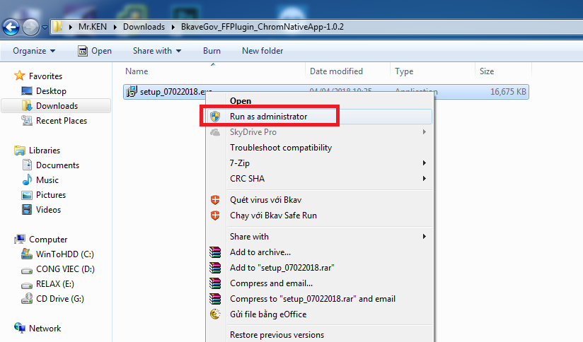
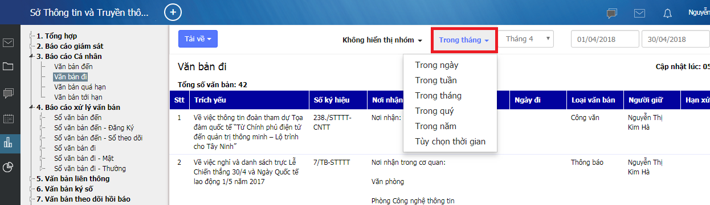

MỤC LỤC
PHẦN I: TRAO ĐỔI THÔNG TIN, ĐIỀU HÀNH TÁC NGHIỆP 4
12. Gửi email cho người khác 19
5.1. Gửi email cho người khác 19
5.2 Gửi tin vào các mục tin (Thông báo, Công cộng…) 20
1.1 Thao tác xử lý khi nhận văn bản đến 24
1.2 Các nút công cụ có trong cửa sổ xứ lý văn bản đến 26
1.3 Ghi ý kiến xử lý vào văn bản 27
1.4 Chuyển xử lý văn bản đến 28
2.1 Khởi tạo một văn bản đi mới 29
2.2 Khởi tạo một văn bản đi trả lời cho văn bản đến: 35
2.3 Để chỉnh sửa nội dung tài liệu kèm theo khi nhận văn bản đi 36
3. Theo dõi, tìm kiếm văn bản 37
(Khuyến cáo: Bạn hãy vừa đọc hướng dẫn này vừa thao tác luôn trên phần mềm để đạt hiệu quả cao nhất)
Để đăng nhập vào hệ thống, bạn làm theo các bước sau đây:
Truy cập vào trình duyệt (khuyến cáo dùng Chrome) => Gõ địa chỉ kết nối tùy theo từng Sở như bên dưới đây:
|
Sở TTTT: |
egovstttt.lamdong.gov.vn |
|
Sở Nội vụ: |
egovsnv.lamdong.gov.vn |
|
Sở Tài nguyên Môi trường: |
egovstnmt.lamdong.gov.vn |
|
BQL TTHC: |
egovbqltthc.lamdong.gov.vn |
|
Sở Công thương: |
egovsct.lamdong.gov.vn |
|
Sở LĐTBXH: |
egovsldtbxh.lamdong.gov.vn |
Cửa sổ đăng nhập sẽ hiện ra, bạn khai báo lần lượt vào 2 ô như sau:
username vào ô (1) => ví dụ: anh “Nguyễn Ngọc Minh” => thì account sẽ là minhnn
password vào ô (2), mặc định là 123456a@
Tick chọn “Duy trì đăng nhập” để lần đăng nhập sau không phải gõ lại account/ password truy cập nữa.
Bấm nút “Đăng nhập” hoặc Enter để vào hệ thống.
Sau đó chọn Tải về Plugin
Đợi 1 lát trình duyệt google Chrome sẽ tải về file cài đặt. Chọn lần lượt từ 1 đến 2 để tới nới lưu file cài đặt trên máy tính như hình dưới (trường hợp người dùng không dùng chương trình hỗ trợ download file)
Sau đó tiến hành giải nén, chuột phải vào file cài đặt chọn Run as administrator

Quá trình cài đặt rất đơn giản, chỉ cần bấm Next và Ok là xong. Sau khi cài xong ta chuyển lại qua trình duyệt Google Chrome và chọn Cài đặt Extention như hình dưới
Sau khi chọn Cài đặt Extention xong, một cửa sổ sẽ xuất hiện, ta tiếp tục làm theo hướng dẫn bên dưới
Cuối cùng chọn Add to Chrome để kết thúc quá trình cài đặt.
Trên giao diện phần mềm có các thanh công cụ chính như sau;
(1): Phần mềm Mail được tích hợp sẵn trên giao diện phần mềm
(2): Phần xử lý văn bản
(3): Phần hội thoại
(4): Phần Lịch công tác
(5): Nút này cho phép người dùng Soạn thư, Khởi tạo văn bản theo quy trình sẵn có
(6): Ô này cho phép Tìm kiếm email, văn bản, file đính kèm…
(7): Mục này hiển thị các cảnh báo cho người dùng biết các văn bản cần xử lý
(8): Phần này cho phép tra cứu, báo cáo, thống kê
Phần mềm cho phép người dùng đặt ảnh đại diện cá nhân để khi giao tiếp với người khác thì hệ thống sẽ hiện ảnh đại diện để mọi người nhận biết nhau dễ dàng hơn.
Bấm vào biểu tượng ở góc trên cùng bên phải màn hình, chọn “Thiết lập”
Trong phần Thông tin cá nhân, bấm nút “Chọn” và chọn đường dẫn đến ảnh bạn cần chọn làm ảnh đại diện.
Sau khi chọn ảnh xong bấm nút “Cập nhật” để hoàn tất.
Trong phần thiết lập cá nhân, mọi người có thể tiến hành đổi mật khẩu mới để đảm tính bảo mật của cá nhân vì hiện tại hệ thống đang để mật khẩu mặc định của mọi người là “123456a@”
Trước tiên chọn vào chức năng Đổi mật khẩu.
Tiếp theo ở ô số 1: Nhập mật khẩu hiện tại mà hệ thống đang gán cho mọi người vào: 123456a@
Ở ô số 2 tiến hành nhập mật khẩu bất kỳ của mình vào. (khuyến cáo nên đặt mật khẩu mạnh để tăng tính bảo mật: gồm chữ thường, chữ hoa, số, ký tự đặc biệt….và trên 8 ký tự).
Nhập lại mật khẩu vừa nhập ở ô số 2 vào ô số 3
Để hoàn tất bấm nút Cập nhật (ô số 4)
Trường hợp người dùng sau khi đổi mật khẩu xong, vì một lý do nào đó mà quên mất mật khẩu, có thể liên hệ với quản trị đơn vị hoặc Sở Thông tin và Truyền thông để được reset lại mật khẩu mới.
Cấu hình chữ ký giúp người dùng sử dụng tính năng chữ ký số. Điều này giúp việc trao đổi thông tin thuận tiện hơn và đảm bảo an toàn hơn. Để cấu hình chữ ký, người dùng cũng vào phần “Thiếp lập cá nhân” và chọn “Cấu hình chữ ký”. Sau đó, người dùng chọn “Thêm mới” như hình minh họa dưới đây:
Trong cửa sổ “Thêm mới”, người dùng thiết lập các thông tin theo nội dung được mô tả và chọn “Cập nhật” để hoàn tất quá trình thiết lập:
Chức năng này cho phép người dùng ủy quyền cho người khác xử lý văn bản, hồ sơ trong khi người dùng bận đi học hay đi công tác. Để sử dụng tính năng này, người dùng vào “Thiết lập cá nhân” chọn “Cấu hình ủy quyền” và chọn “Thêm mới” để tạo thêm ủy quyền mới như hình minh họa dưới đây:
Tiếp theo, trong cửa sổ thêm mới ủy quyền, người dùng thiết lập cá thông tin liên quan như: người nhận ủy quyền; ngày bắt đầu, ngày kết thúc ủy quyền; các loại hồ sơ ủy quyền …
Sau khi thiết lập các thông tin xong, người dùng chọn cập nhật để hệ thống lưu các thông tin đã thiết lập.

Phần cấu hình này sẽ cho phép người dùng cấu hình các thông báo tương ứng với các mục: Xử lý văn bản, trao đổi, điều hành.
Mỗi khi có thông báo mới, phần mềm sẽ cảnh báo bằng âm thanh và notify ở góc dưới bên phải màn hình làm việc của người dùng, giúp người dùng không bỏ xót bất kỳ
Để tăng tính bảo mật cho tài khoản sử dụng phần mềm, hệ thống cung cấp chức năng Quản lý thiết bị giúp cho người dùng quản lý tài khoản của mình một cách an toàn nhất.
Cơ chế của chức năng này nếu người dùng lựa chọn tick vào phần Chặn thiết bị mới đăng nhập theo địa chỉ MAC đó là: nếu hệ thống phát hiện ra bất kỳ một thiết bị nào đăng nhập vào tài khoản của người dùng, có địa chỉ MAC khác với địa chỉ MAC đã lưu trong CSDL thì hệ thống sẽ tự động Block thiết bị đó, đảm bảo rằng chỉ mình thiết bị của người dùng mới có thể đăng nhập được.
Ngoài ra hệ thống cũng lưu lại tất cả các phiên đăng nhập của người dùng trên các thiết bị khác nhau, và để chặn bất kỳ thiết bị nào, người dùng chỉ việc bấm vào nút Chặn thiết bị như hình bên dưới.
Đây là hình thức trao đổi thường xuyên nhất giữa các cá nhân trong cơ quan, nó cũng khá đơn giản khi bạn chỉ cần gõ thông điệp và gửi đi.
Từ thanh công cụ phía bên trái màn hình làm việc của phần mềm eGov chọn Trao đổi
Cửa sổ Hội thoại xuất hiện kèm theo danh sách những người trong cơ quan đang có mặt trực tuyến trên eGov.
Tìm đến tên người mà bạn muốn hội thoại và kích vào tên của người đó, Cửa sổ hội thoại hiện ra phía bên phải màn hình.
Dùng bàn phím gõ lời thoại vào ô trống phía dưới cửa sổ hội thoại rồi nhấn phím Enter để gửi lời thoại của bạn cho người nhận.
Sử dụng thêm các tính năng khác như: Định dạng kiểu chữ, cỡ chữ, chèn hình biểu cảm, hình minh họa(nếu cần).
Trên cửa sổ hội thoại có hai lựa chọn để người dùng theo dõi là “Hội thoại” và “Toàn bộ”:
- “Hội thoại”: hiển thị những nội dung người dùng đã hội thoại với những tài khoản khác. Người dùng có thể xem lại thông tin, tìm kiếm các thông tin trên cửa sổ này:
- “Toàn bộ”: Cho phép người dùng theo dõi các tài khoản theo cây thư mục phòng ban:
Khi có tin hoặc thông báo mới do người khác gửi đến, eGov sẽ tự động báo cho bạn biết thông qua một khung nhỏ ở góc phải phía dưới màn hình, để đọc được tin, thông báo đó, bạn chỉ cần kích chuột vào dòng chữ phía bên trong của ô thông báo để đọc nội dung.
Lưu ý:
Việc bạn có nhận được thông báo (Notify) của eGov hay không còn tùy thuộc vào quyền hạn của bạn đối với từng mục tin do người quản trị phân quyền.
Do vậy, trong trường hợp có những người nhận được thông báo (Notify) nhưng bạn lại không thì điều đó là hoàn toàn bình thường.
Để gửi email cho người khác bạn có thể thực hiện như sau:
Chọn nút “Soạn thư” ở góc trên bên trái cửa sổ phần mềm eGov
Gõ địa chỉ email của người nhận vào ô “Gửi tới”.
Gõ tiêu đề bức thư vào ô “Tiêu đề”. Ví dụ: Họp phòng
Để đính kèm file theo email bạn chọn nút và chọn file cần gửi kèm.
Chọn nút “Gửi” ở góc trên bên trái cửa sổ soạn thư để gửi thư đi.

Để trả lời email cho 1 (hoặc toàn bộ những người trong danh sách nhận thư) bạn làm như sau:
Bấm chuột phải vào thư mà bạn cần trả lời
Chọn “Trả lời”
Sau đó bạn gõ nội dung thư trả lời, đính kèm file (nếu cần)
Bấm nút “Gửi” để gửi thư đi
Tùy thuộc vào cơ cấu, tổ chức của cơ quan bạn mà ở đó có các mục tin khác nhau, ví dụ: mục Công cộng, Giải trí, Phòng A, Phòng B, Để gửi tin vào các mục này, bạn có thể làm theo như sau:
Từ thanh tác vụ trên màn hình eOffice chọn Tin điều hành. Cây phân cấp hiện ra với danh sách các mục tin có trong cơ quan.
Kích chuột vào mục tin mà bạn muốn gửi tin của mình vào.
Nhập vào tiêu đề của tin để gửi đi.
Bấm nút Gửi để hoàn tất.

- Phản hồi tin trên một mục tin
Để phản hồi tin trên một mục tin, người dùng lựa chọn tin muốn phản hồi lên mục tin và chọn “Trả lời tất cả”:
Để giúp việc tạo lịch và theo dõi lịch họp trong cơ quan, hệ thống cho phép người dùng tạo và quản lý danh sách lịch họp như sau:
Để vào chức năng Lịch, người đùng chọn vào menu Lịch bên trái phần mềm (mục 1).
Để tạo và quản lý lịch, bấm vào mục Quản lý lịch
Ở đây, người dùng có thể xem danh sách lịch đã duyệt, tạo lịch mới…..
Các bước để tạo lịch họp rất đơn giản, cần điền đủ các thông tin vào các trường hệ thống yêu cầu và kết thúc thao tác bằng cách bấm vào Cập nhật.
Sau khi hoàn tất quá trình tạo lịch, bước tiếp theo là chờ lịch được duyệt bởi người đã được hệ thống phân quyền.
Khi có văn bản đến cần xử lý, phần mềm sẽ tự động thông báo (notify) trên giao diện phần mềm.
Bước 1: Nhấp chuột vào dòng chữ bên trong cửa sổ notify.
Một giao diện xử lý văn bản hiện ra cho phép bạn làm việc với văn bản vừa chọn
Bước 2: Nhấp đúp chuột trái vào phần trích yếu của văn bản cần xử lý.
Một cửa sổ mới hiện ra với nội dung văn bản, các tài liệu kèm theo (nếu có) và các ý kiến xử lý liên quan.
File đính kèm là pdf có thể kích chuột trái mở để xem toàn bộ văn bản đính kèm

(1): Thanh công cụ, cho phép thực hiện các thao tác với văn bản
(2): Cho phép người dùng ghi ý kiến xử lý vào mục này
(3): File đính kèm văn bản
(4): Vết xử lý của văn bản: cho phép theo dõi văn bản đã chuyển qua những ai, ai cho ý kiến gì, thời gian xử lý
Bước 3: Nhấp chuột vào các đề mục trong phần nội dung văn bản để xem chi tiết các ý kiến xử lý liên quan và các vết công văn (văn bản khởi đầu từ đâu, chuyển đến những ai,…).
“Chuyển” cho phép chuyển xử lý văn bản cho người khác theo quy trình
“Sửa” cho phép sửa nội dung các phiếu, biểu mẫu gắn với nội dung văn bản
“Đính kèm” cho phép đính kèm thêm các file (.doc, .xls, .pdf…) vào văn bản.
“Kết thúc” cho phép kết thúc 1 văn bản sau khi đã xử lý xong.
“Trả lời” chứa các luồng văn bản phù hợp để phúc đáp công văn đến
“Phân loại” cho phép chuyển 1 văn bản từ quy trình xử lý này sang quy trình xử lý khác.
“In” cho phép in văn bản ra máy in
“Gia hạn” cho phép đặt lại thời hạn xử lý cho văn bản
“Xin ý kiến” cho phép xin ý kiến các cá nhân khác về cách giải quyết văn bản này, và người xin ý kiến sẽ là người tổng hợp các ý kiến này lại.
“Thông báo” cho phép gửi một bản đến thông báo cho những người cần biết về văn bản này
“Gửi ý kiến” cho phép người dùng gửi ý kiến bổ sung vào văn bản (kể cả khi văn bản đã gửi đi cho người khác
“Lưu sổ” cho phép lưu một bản vào hồ sơ cá nhân của mình ( Giống như photo giữ lại một bản)
Khi mở văn bản ta sẽ thấy phần để ghi ý kiến xử lý của mình
Ghi ý kiến xử lý vào ô ý kiến.
Ý kiến xử lý của bạn sẽ được lưu lại khi bạn chuyển xử lý văn bản cho người khác.
Lưu ý :
Bạn có thể tạo ra các mẫu ý kiến xử lý và dùng lại cho tiện bằng cách bấm vào mục
Nếu bạn mở công văn ra và chưa xử lý ngay, bạn có thể mở lại cửa sổ xử lý văn bản bằng cách bấm vào mục Văn bản chờ xử lý
Sau đó bạn có thể xem nội dung văn bản cũng như ý kiến xử lý liên quan.
Từ cửa sổ xử lý văn bản chọn nút “Chuyển”
Một menu hiện ra với danh sách các nơi nhận được gợi ý sẵn.
Chọn đối tượng cần chuyển tới.
Một cửa sổ nhỏ hiện ra cùng với danh sách những người thuộc đối tượng bạn vừa chọn.
Chọn tên người xử lý.
Nếu văn bản do nhiều người xử lý (một người chính và nhiều người cho ý kiến) trong cửa sổ Chuyển xử lý ta tick chọn người người xử lý chính và chọn những người đồng xử lý )
Từ thanh công cụ của
chương trình chọn mũi tên sổ xuống bên cạnh nút
 , một menu hiện ra.
, một menu hiện ra.
Chọn quy trình tương ứng trong danh sách
Cửa sổ soạn thảo văn bản xuất hiện.
Để dự thảo nội dung văn bản đi, có 2 cách
Cách 1 - Dự thảo trên trình soạn thảo thông dụng (MS Word, Excel,…): soạn thảo nội dung trên một trình soạn thảo bất kỳ sau đó gắn kèm file này vào văn bản, chi tiết xem phần Nhập tài liệu kèm theo . Đây là cách thường sử dụng.
Cách 2 - Soạn nội dung trên trình soạn thảo của eGov: soạn trực tiếp trên phần nội dung của cửa sổ Văn bản
Bạn có thể gửi tài liệu kèm theo (dự thảo văn bản, tài liệu tham khảo liên quan tới văn bản, các văn bản liên quan,..) vào một văn bản để chuyển đi, bạn làm như sau:
Trong cửa sổ làm việc với văn bản, chọn
Một cửa sổ mở ra cho phép bạn duyệt đến file cần đính kèm.
Tìm đến file cần đính kèm vào văn bản.
Chọn Open để kết thúc việc chọn tài liệu gửi kèm.
Ngoài việc đính kèm các tài liệu, người dùng có thể đính kèm công văn liên quan vào văn bản như sau:
Người dùng có thể chọn các cách sau để tìm kiếm văn bản liên quan:
1: nhập trích yếu của văn bản đính kèm.
2: Nhập số ký hiệu cần tìm của văn bản đính kèm
3: Nhập số đến của văn bản muốn tìm kiếm.
4: Sau khi nhập xong các tiêu chí tìm kiếm, bấm vào ô này để hệ thống tự động tìm kiếm văn bản liên quan.
Kết quả sau khi tìm kiếm xong sẽ được liệt kê ra bảng bên dưới. Chọn văn bản muốn đính kèm vào công văn bằng cách tick vào ô bên trái ở bảng 5
Kết thúc quá trình bằng cách ấm nút thêm (ô số 6)
Sau khi đã khởi tạo và dự thảo nội dung cho văn bản đi, bạn điền các thông tin liên quan tới văn bản:
Thực hiện tương tự như việc chuyển xử lý văn bản đến.
Từ cửa sổ xử lý văn bản chọn Chuyển
Một menu hiện ra với danh sách các nơi nhận được gợi ý sẵn.
Chọn đối tượng cần chuyển tới.
Một cửa sổ nhỏ hiện ra cùng với danh sách những người thuộc đối tượng bạn vừa chọn.
Chọn tên người xử lý.
Nếu văn bản do nhiều người xử lý (một người chính và nhiều người cho ý kiến) trong cửa sổ Chuyển xử lý ta tick chọn người người xử lý chính và chọn những người đồng xử lý)
Khi bạn gửi nhầm địa chỉ hoặc muốn chỉnh sửa lại nội dung văn bản đã chuyển cho người khác, bạn có thể sử dụng tính năng Lấy lại văn bản.
Bạn vào phần “Xử lý văn bản” của phần mềm
Chọn mục Văn bản đang theo dõi
Bấm chuột phải vào văn bản cần lấy lại.
Một menu hiện ra.
Chọn Lấy lại văn bản.
Vào mục Văn bản chờ xử lý để xem văn bản vừa lấy lại để xử lý lại.
Lưu ý: Văn bản chỉ có thể lấy lại khi người nhận văn bản chưa mở văn bản ra. Văn bản xin ý kiến của người khác, khi lấy lại văn bản xin ý kiến đồng nghĩa với việc bỏ việc xin ý kiến này
Hồ sơ lưu văn bản có thể là hồ sơ đã có hoặc bạn tạo mới (nếu cần). Muốn lưu văn bản vào hồ sơ nào bạn chỉ cần chọn vào tên hồ sơ đó rồi nhấn
Mở văn bản đến cần xử lý.
Trên cửa sổ xem chi tiết văn bản chọn Trả lời.
Một menu hiện ra.
Chọn quy trình tương ứng
Cửa sổ soạn thảo văn bản đi xuất hiện và văn bản đến mà bạn đang xử lý đã được đính kèm vào văn bản đi mới khởi tạo.
Soạn thảo văn bản đi (Gửi kèm tài liệu hoặc soạn trên trình soạn thảo eOffice) rồi chuyển văn bản để trả lời
Sau khi văn bản đi mới khởi tạo được xử lý xong (được phát hành) thì văn bản đến liên quan tới văn bản đi này cũng tự động được kết thúc.
Mở văn bản cần xử lý.
Nhấp đúp chuột vào file văn bản đính kèm để mở và chỉnh sửa nội dung.
Lưu lại nội dung vừa chỉnh sửa.
Việc kết thúc xử lý văn bản được thực hiện khi bạn đã hoàn thành việc soạn thảo và kiểm duyệt nội dung của văn bản này.
Để kết thúc xử lý một văn bản:
Mở văn bản cần kết thúc.
Chọn Kết thúc trên thanh công cụ.
Lưu văn bản vào hồ sơ.
Nếu đã có sẵn hồ sơ để lưu, bạn chọn hồ sơ và nhấp đúp vào hồ sơ đó (hoặc chọn hồ sơ rồi nhấp vào “Lưu”).
Trường hợp chưa có hồ sơ cần để lưu văn bản, ta phải tạo hồ sơ mới bằng cách nhấp nút “Tạo mới”. Nhập tên hồ sơ rồi nhấp vào “Tạo mới” để tạo hồ sơ mới, sau đó lưu văn bản vào hồ sơ mới này.
Để theo dõi 01 (hoặc nhiều) văn bản thì phần mềm đã có sẵn 1 mục là “Văn bản đang theo dõi”, mục này tự động cập nhật các văn bản chưa xử lý xong để “người gửi” văn bản có thể theo dõi được văn bản mình gửi đang ở vị trí nào, đã duyệt hay chưa…
Ngoài ra phần mềm cho phép tìm kiếm văn bản theo bất cứ thông tin nào liên quan tới văn bản đó như: trích yếu, số ký hiệu, người soạn, loại văn bản, khoảng thời gian…
Để sử dụng chức năng tìm kiếm nâng cao của phần mềm, thay vì nhập luôn thông tin vào thanh tìm kiếm như hình trên, chúng ta sẽ bấm vào biểu tượng kính lúp như ở hình bên dưới.
Tiếp theo tick vào ô Tìm kiếm nâng cao
Bảng tìm kiếm nâng cao sẽ hiển thị với rất nhiều tiêu chí tìm kiếm để người dùng nhập như Số ký hiệu, số đến, khoảng thời gian, cơ quan ban hành…..
Sau khi nhập xong các dữ liệu tìm kiếm, bấm vào ô Tìm kiếm để hoàn tất và xem kết quả.
Phần mềm cung cấp cho người dùng công cụ Báo cáo, giúp cho việc thống kê, báo cáo tình hình xử lý văn bản dễ hơn bao giờ hết.
Để vào mục báo cáo, chọn menu bên trái phần mềm như hình dưới:
Hệ thống báo cáo với nhiều các tiêu chí: Báo cáo giám sát, báo cáo Cá nhân, báo cáo xử lý văn bản…..
Trong
mỗi mục báo cáo sẽ có các tiêu chí lọc tương ứng để
giúp người dùng có được kết quả một cách chính xác
và đầy đủ nhất:
Kiểu hiển thị
Khoảng thời gian: Cho phép người dùng chọn theo khoảng thời gian.
Xuất báo cáo
Cung cấp
cho người dùng các định dạng văn bản phổ biến để
xuất ra: Word, Excel, PDF…
Hệ thống cung cấp cho người dùng công cụ giám sát việc thực hiện các nội dung đã giao trên văn bản, để từ đó có thể thống kê và báo cáo theo các tiêu chí bất kỳ.
Dựa vào công cụ giám sát này, có thể theo dõi và đánh giá năng lực xử lý công việc của từng cá nhân, phòng ban cụ thể.